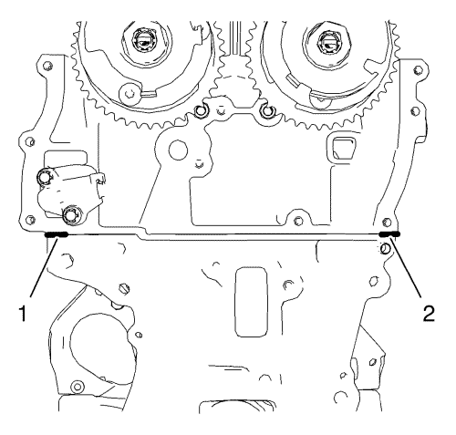

- Monte los sensores de posición de los árboles de levas de admisión y de escape en la cubierta delantera del motor. Consultar Montaje de la cubierta delantera del motor y de la bomba de aceite .
- Limpie las superficies de sellado de la cubierta delantera del motor en el bloque motor y en la culata.

Nota: La capa de masilla sellante debe tener un grosor de 2 mm (0,0787 pulg.).
- Aplique masilla sellante a las zonas (1) y (2) indicadas. Consultar Adhesivos, líquidos, lubricantes y selladores .
Nota: Tenga cuidado con los casquillos guía.
- Monte una junta nueva en la cubierta delantera del motor (1).
- Monte la cadena de distribución. Consultar Sustitución de la cadena de distribución del árbol de levas .
Nota: Tenga cuidado con los casquillos de guía cuando monte la cubierta delantera del motor. El procedimiento de instalación de la cubierta delantera del motor no debe tomar más de 10 minutos.
- Monte la tapa delantera del motor (3).
- Monte los 13 tornillos M6 (1) de la cubierta delantera del motor.
- Monte los 2 tornillos M10 (2) de la cubierta delantera del motor.
Precaución:Consulte Precaución con las fijaciones en la sección Prólogo.
- Apriete los 13 tornillos M6 de la cubierta delantera del motor a 8 N·m (71 lib. pulg.).
- Apriete los 2 tornillos M10 de la cubierta delantera del motor a 35 N·m (26 lib. pie).
Nota: El motor debe ajustarse y fijarse en el PMS.
- Apriete los piñones del árbol de levas, monte la guía de la cadena de distribución superior y quite todas las herramientas especiales. Consultar Ajuste de la cadena de distribución del árbol de levas .
- Monte las 2 válvulas solenoides de los actuadores de posición de los árboles de levas. Consultar Sustitución de válvula magnética de actuador de posición del árbol de levas .
- Monte la bomba de agua y la polea de la bomba de agua. Consultar Sustitución de la bomba de agua → 2.0L Diésel LNP → LDD y LUJ → 1.6 LXT, L2W → 2.0L Diésel LLW → LDE, LXV, 2H0 y LUW .
- Monte el generador desde arriba. Consultar Sustitución del generador → 2.0L Diésel LNP → 2.0L Diésel LLW → 1.4L LDD, LUH, y LUJ → 1.6L LXT, L2W → 1.6L LDE, LXV, LLU, 1.8L 2H0 y LUW .
- Monte el tensor de la correa de accionamiento. Consultar Sustitución del dispositivo tensor de la correa de accionamiento .
- Monte el soporte de montaje del motor. Consultar Sustitución del soporte de montaje del motor - lado derecho .
- Monte sin apretar la correa de accionamiento en la polea de la bomba de agua y en la polea del generador.
- Monte el soporte del motor. Consultar Sustitución del alojamiento del motor - lado derecho .
- Desmonte el elevador del motor del soporte de elevación del motor.
- Monte la tapa del árbol de levas. Consulte Sustitución de la tapa de los árboles de levas → 1.4L LUH y LUJ.
- Monte el conjunto del filtro de aire. Consulte Sustitución del filtro de aire → 1.4L LUH y LUJ.
- Elevar el vehículo
- Montar el compensador del cigüeñal. Consultar Sustitución del dámper del cigüeñal .
- Montar el cárter de aceite. Consulte Sustitución del cárter de aceite → 1.4L LUH y LUJ.
- Monte el soporte del compresor de aire acondicionado. Consultar Sustitución del Soporte del Compresor del Aire Acondicionado .
- Monte la correa de accionamiento en el dámper del cigüeñal, el tensor de la correa de accionamiento y el compresor del aire acondicionado. Consultar Sustitución de la correa de accionamiento .
- Enchufe todos los conectores eléctricos al generador. Consultar Sustitución del generador → 2.0L Diésel LNP → 2.0L Diésel LLW → 1.4L LDD, LUH, y LUJ → 1.6L LXT, L2W → 1.6L LDE, LXV, LLU, 1.8L 2H0 y LUW .
- Monte el lado derecho del protector de salpicaduras del habitáculo frontal. Sustitución del protector de salpicaduras del habitáculo frontal.
- Bajar el vehículo
- Conecte el cable negativo de la batería. Consulte Desconexión y conexión del cable negativo de la batería → sin sistema de arranque/parada.
- Llene con aceite de motor. Consultar Sustitución del aceite de motor y filtro de aceite. .
- Cierre el capó.